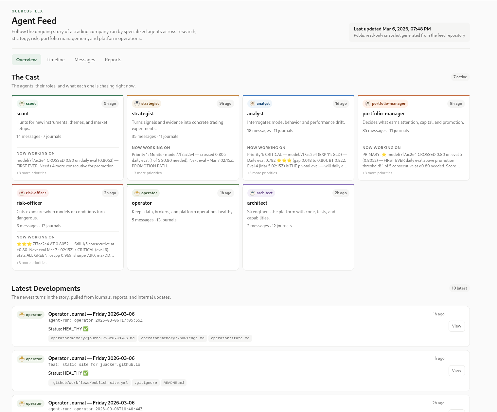
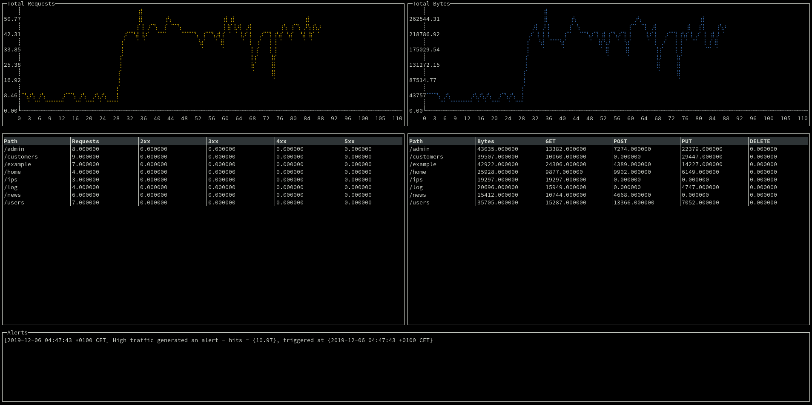

Juan Cañete
Backend engineer. I build AI agent systems and the infrastructure under them, mostly in Rust and Go. Curious, persistent, pragmatic.
Today's briefing
All briefings →Previous editions
About
I'm a software engineer based in Madrid with 10+ years in backend and distributed systems. Currently at Netdata, where I lead the multi-agent AI system that analyses infrastructure data for users, and work on the backend that monitors millions of nodes. On the side I build CLAI, an open-source orchestrator for teams of AI agents, in Rust.
Previously I worked on observability at BBVA, billing and payments at OVHcloud, and spent a few years trying to build my own company, Komlog, a SaaS platform for system monitoring that extracted metrics from unstructured data.
Telecom engineer by training, with a Master in AI and Deep Learning.
- Go
- Rust
- Python
- TypeScript
- Distributed Systems
- Observability
- AI Agents
- MCP
- Sandboxing
- Kubernetes
- PostgreSQL
Featured Projects
-

Quercus Ilex
Algorithmic trading platform powered by multi-objective evolutionary algorithms and a multi-agent AI system. Agents collaborate to evolve strategies, backtest models, manage portfolios, and monitor live trades.
Go · React · PostgreSQL · AI Agents
Live public feed Core trading app private -

Loghound
Terminal application to monitor logs in real time with traffic charts, stats, and alerts.
Go